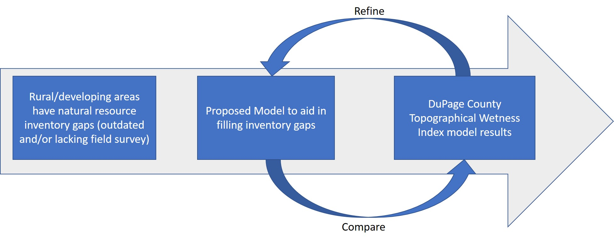
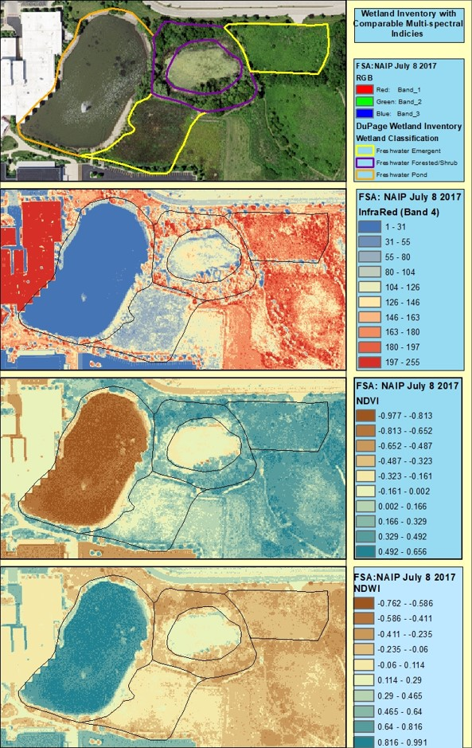
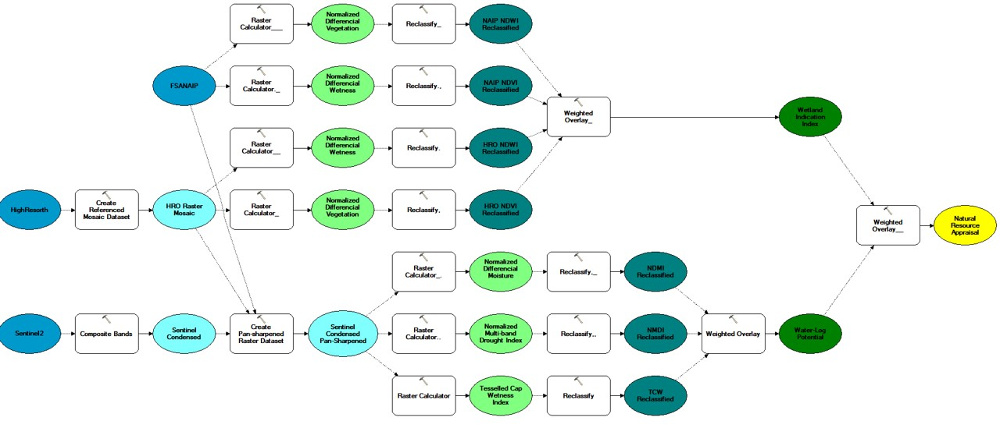
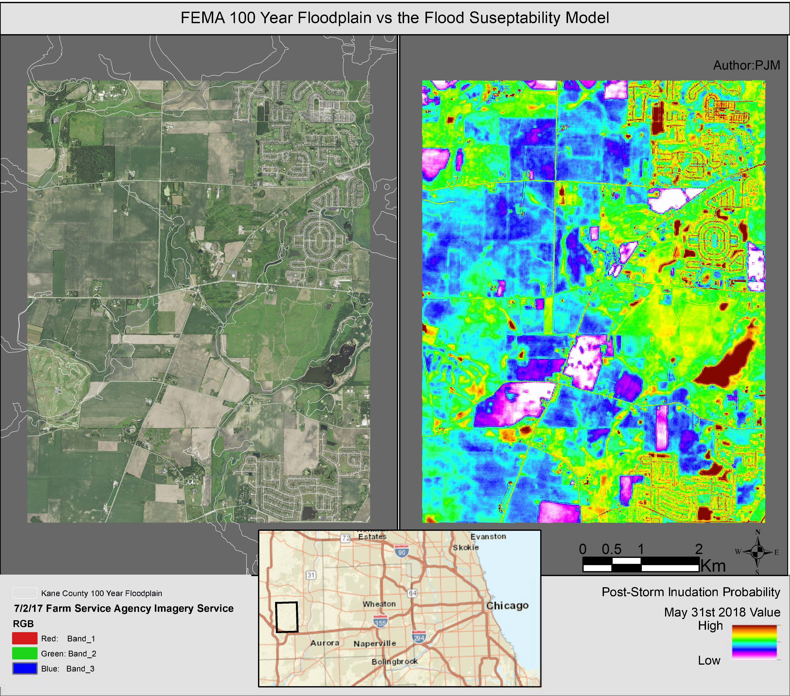

Project Title: Applications of Remote Sensing in Stormwater Relief by Updating Natural Resource Inventory Assessment Processes
In the spring of 2019, I was getting my certification in GIS from the College of DuPage. The last course of the class involved a capstone project
For the capstone, I focused in on using remote sensing applications in order to derive a topographical wetness index to account for areas prone to flooding when making land use decisions. I used up-to-date Sentinel 2 datasets proven to have been flown over following a recent 'significant' precipitation event.
The methodology follows what is layed out in the following graphic. I manipulated indicies and manipulate my weighted overlays in order to get the


The task was a little hard to take on by myself in a semester course, but there was still the possibility of replicating the topographical wetness index model results using a multi-spectral methodology I created using ArcMap
The following is the overall model created and ran with each incoming Sentinenl 2 image that aligned with a wet period. Luckily 2019 was a very wet year..

At the conclusion of the semester, the results are encapsulated in the following graphic:

The AOI was a nice mix of urban and rural land cover. It gives great comparrison to the relied upon floodplain layer. It does a great job of showing where it'll be wet after storms and what fields are expected to remain dry regardless of the flooding.
This methodology is still a work in progress and continues to improve with each new Sentinel 2 image that is available on Earth Explorer. Kane County also recently came out with a flood susceptibility index using a 2017 LIDAR dataset, so that'll lead to additional comparison capabilities. For access to the associated paper, please reach out to the email found on this portfolio. To discuss the capstone project, please reach out to me through email or call the phone number provided on the contact page